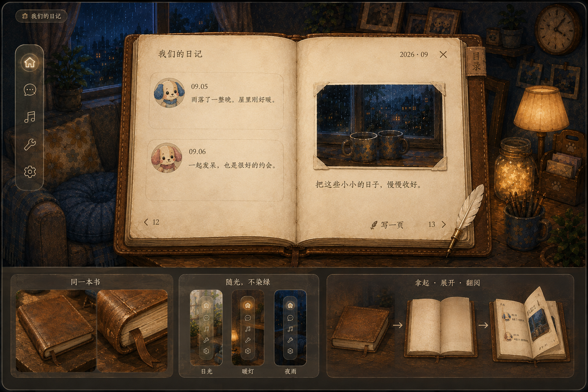
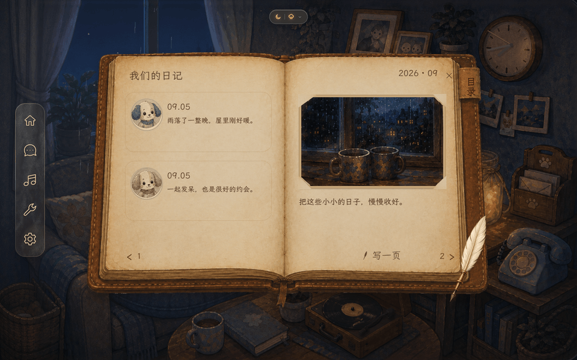
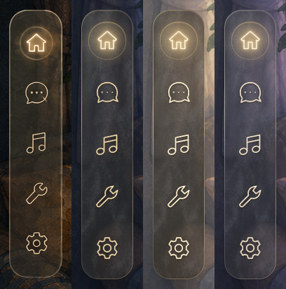
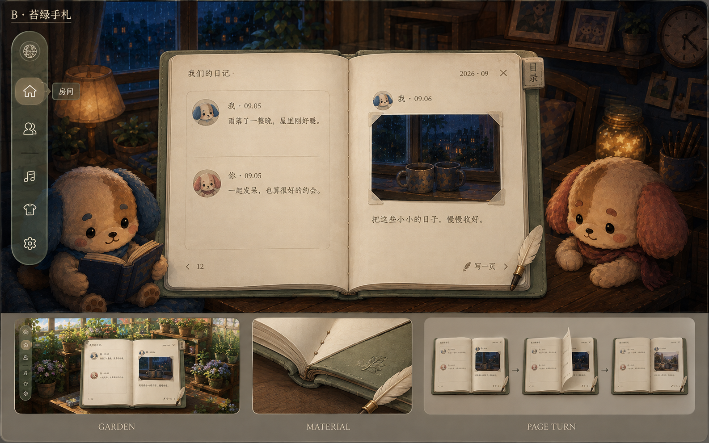
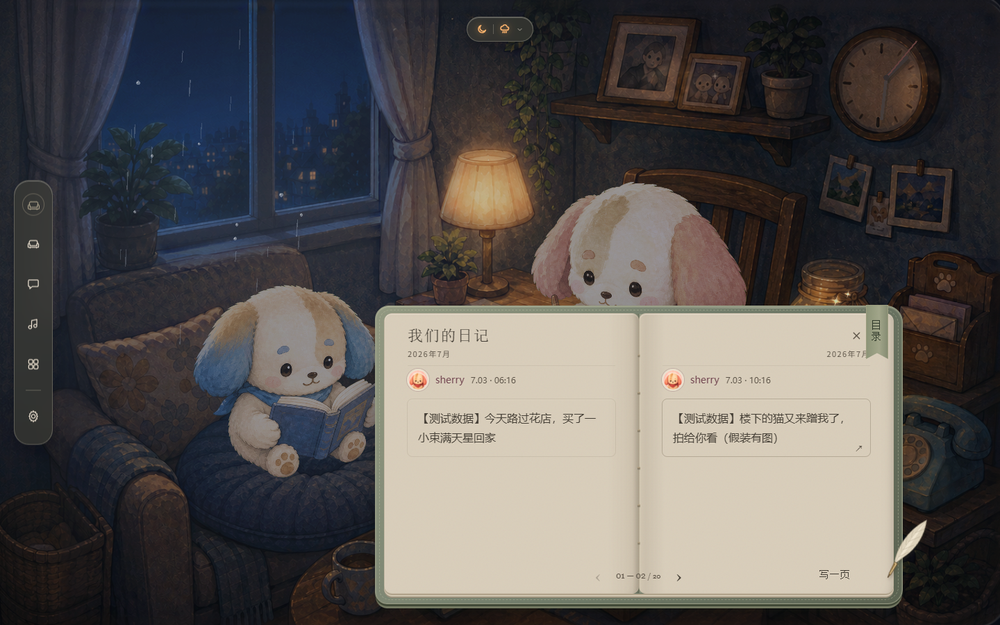
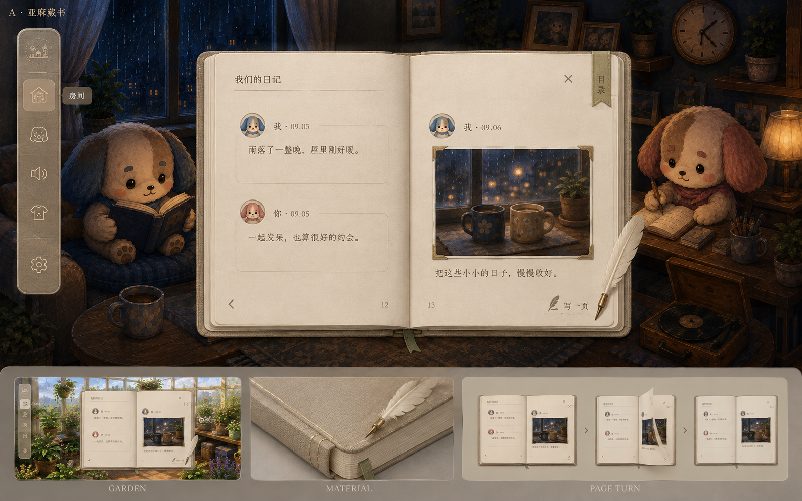
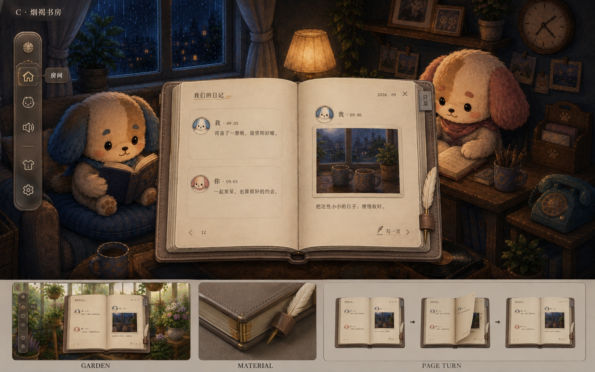
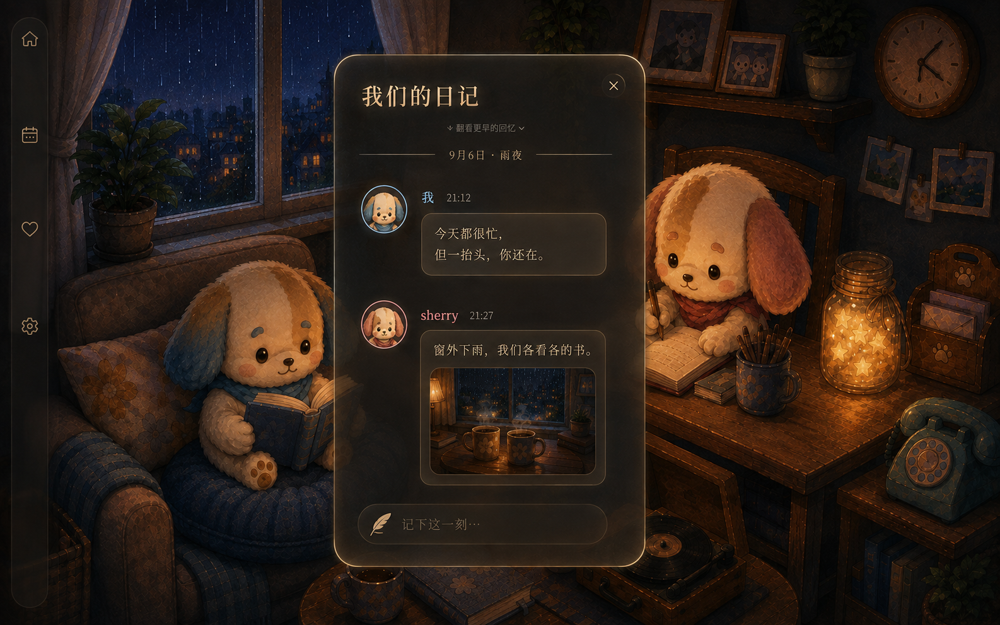

①设计概念 · 光照递进
Our World
是一个记忆空间，不是一个工具面板。视觉的第一使命是让「你们的场景与回忆」成为主角，界面永远是画框而不是画。
大耳狗提供性格（柔软天蓝 · 腮红粉 · 圆），光线提供沉浸。
UI 的明度跟着世界里的时辰走：黄昏通透、暮色雾灰、入夜沉入石墨——三档是一条连续的阶梯，不是三个孤立主题。
设计源：ai/design_system/cinnaglass/mood-progression-codex/（codex 出稿 + 调研报告）。
明度阶梯 —— 沉浸感的技术定义
黄昏 · 外壳 94%
暮色 · 外壳 70%
夜晚 · 外壳 26%
2026-09-06 用户批准 B「苔绿手札」：内容用不透明暖灰纸，灯泡与天空可以更亮；深暖墨字保证阅读，中性透明轻壳留给导航与工具。
1阶梯必须拉开 ≥35%。三层挤在同一明度区 = 画面「平」、眼睛找不到主角（这是 2026-07-13
之前全白版本失败的根因）。
2白色是奖赏，不是底色。纯白只发给记忆内容——照片、日记卡、聊天气泡；导航外壳一律暮色。
3大耳狗活在点缀里。天蓝当发光强调色、腮红粉当情绪点，不再当大面积背景——深色底反而让这两色更鲜活。
4Chrome 中性，Accent 彩色，Paper 纯白。外壳是中性烟熏玻璃（几乎不带色相，只留一丝冷/暖倾向）——饱和的藏蓝/紫外壳会和照片、头像、强调色抢戏且很快看腻。整个界面里唯一该有明确颜色的地方：强调色、选中态、徽章、以及内容本身。
②双色域法则（最重要的一条）
每一个界面表面只属于两个色域之一。搞错色域＝浅色字压浅色底，这是本主题最容易出的 bug。
| 色域 |
用在哪 |
背景 |
文字 |
SHELL 外壳
随时辰变明度
|
sidebar 面板与胶囊 rail、所有弹窗外壳、HUD 浮窗、聊天 dock、音乐播放器、登录卡 |
.glass → --glass-shell |
--glass-text
黄昏/暮色 深色 · 夜晚 浅色
|
PAPER 纸面
暖灰纸 · 恒定
|
日记页与回忆条目、照片卡、聊天气泡、设置分组、成员卡、所有输入框、表情面板 |
.paper → --glass-paper |
恒为深色 --paper-text |
实现机制：纸面自动重映射
组件 CSS 里永远只写 --glass-*，不用关心自己在哪个色域。cinnaglass.css
里有一段选择器，凡是纸面表面就把这些变量重指向纸面值：
.paper, .tl-card, .set-group, .chsc-m .bub, input, textarea, … {
--glass-text: var(--paper-text);
--glass-sub: var(--paper-sub);
--glass-line: var(--paper-line);
--glass-hover / --glass-active / --glass-hi …
}
新增白底组件时，必须把它的类名加进那份选择器清单，否则会出现「白底上的浅色字」。这是本主题唯一的强制登记动作。
⑤组件库 · 形态与规矩
上方预览台里的组件都是活的（会随档位变化）。下表是每个组件的归属色域与既定规矩——新做组件先查这张表。
已批准 · 桌上的同一本日记（2026-09-07 更新）
用户否决上一轮 B 实装效果：新方向以场景桌面的棕色日记为原型，大幅严格居中，允许遮挡角色。导航已实施且获用户认可；棕皮旧纸书本接入真实图文随纸竖直翻动、连续翻阅与阅读时雨不停播，等待实景体验确认。羽毛笔仅作图片；拿起/收回、羽毛笔交互及其他弹窗迁移尚未实施。

生成式概念板，不是产品截图。局部房间陈设与开场第一格仍有偏差；用户已明确认可发光，落地保留暖光反馈。
新设计与当前翻页原理、视觉问题复核 · 完整生成描述
已接入 · 棕皮旧纸书本静态美术
本页直接引用真实 journal-room.css。封皮、叠页与纸纤维使用无字底图，日期、正文与页码为可选中的真实文字；暖褐墨色与纸色相乘，让字融入纸面。没有固定作者左右列，没有彩色左边线。新翻页登记于下方独立章节。
实装截图；示例文字与照片只在独立测试浏览器替换读取结果，没有写入数据库。真实预览继续显示你们的回忆。
| 项目 | 书本当前规则 |
|---|
| 几何 | 1440×900 中 1040×670，中心 720/450；960×700 中 800×515。窄屏/矮屏单页，为底部导航上移 22px。 |
| 材质 | 栗棕皮革、蜂蜜磨边、旧米纸、暖褐墨、象牙羽毛；实际纹理来源与采用清单记录在 arts/ui/journal 与 public/ui/journal 的 manifest。 |
| 文字与留白 | 正文 #594126；桌面标题 26px、日期 21px、正文 17px；页内两侧各 34px，上下留 86/70px。使用本地文楷与轻微墨边，文字仍可选择复制。 |
| 纸色复核 | 左右无字纸面与批准稿的代表区域明度差 -0.80 / -2.68（满刻度 255）；只证明采样区域接近，不是全图相似度或逐像素一致证明。 |
| 验证边界 | 三时辰、四尺寸、长文/九图/草稿/详情和导航回归完成；翻页与阅读背景运行见下节。真实花园、Safari、低端设备未覆盖；未部署。 |
本轮实现与全部验证 · 批准稿 / 实装并排 · 真实回忆截图 · 黄昏 · 暮色 · 生成及失败处理记录 · 实际 CSS
已接入 · 竖直翻页与连续翻阅
同一纸面的旧纸纹、日期、正文、照片与页码共同立起弯转。经过竖直位置后露出背面；底下的新页随着遮挡移开而显露，不等动画结束才换字。采用真实网页内容的三维变换，没有自定义 shader，也不是播放视频代替内容。

单页实景录像，25 帧/秒导出；页面文字与照片仅在独立测试浏览器替换读取响应，未写入数据库。
连续三张：已经加载的中间页仍为真实文字与照片，不替换模糊假字。GIF 不代表实时运行帧率。
| 项目 | 当前规则 |
|---|
| 纸面 | 24 条相接窄片形成浅弯曲；正反面绑定同一纸面，书脊固定，纸面总长保持。纹理继续取自已批准旧纸素材。 |
| 时值 | 单张 980ms；连续 470ms/张，上张行程 38% 接续，同时最多 3 张；起落放缓，中途加速保留已转位置。 |
| 输入 | 按钮/方向键累加目标，目录跨页逐张翻；反向先收好已出发的纸。关闭、缩放与写作收在最近跨页，减少动态效果时直接换页。 |
| 加载 | 所有已加载中间页清晰；没有启用模糊文字降级。更早历史通过目录先加载，保持当前段落，未返回内容不算假页数。 |
| 环境与清理 | 读日记时雨景继续运行；翻阅结束移除动画副本，不保留翻页专属逐帧循环。羽毛笔仍为静态图片。 |
| 边界 | 浅弯曲纸片近似，不是布料模拟；Safari、低端设备、低带宽图片与真实花园未覆盖。未部署。 |
实现决策与验证报告 · 独立运动样板 · 实际页面检查结果 · 实际翻页 CSS
已接入 · 随光微磨砂导航
导航专属材质真源为 shell/navigation-glass.css，本页直接引用同一文件。生成图片只提供透明细纹；背景透射、局部反光、暖光反馈和三时辰色温由运行时样式控制。没有更改全局纸面材质。

左为批准稿，右三列为真实产品。透过的房间不同，所以反射颜色不同；这不是逐像素相同的证明。
| 项目 | 导航当前规则 |
|---|
| 几何 | 桌面 74×384 / 圆角 25 / 左距 38 / 垂直居中；窄或矮屏改为底部 292×62。五入口，不加无功能徽标。 |
| 表面 | 真实透景 + 2.4px 轻模糊 + 透明细纹 + 分段强弱的 1px 反光边；深夜/黄昏/暮色采用不同烟色厚度，禁止固定刷绿。 |
| 反馈 | 悬停有暖光晕；按住缩至 94% 且光收紧，触屏也生效；菜单打开保留较弱暖光；键盘焦点可见，减少动态效果时取消过渡。 |
| 复用边界 | 导航房间/工具菜单采用同家族的厚玻璃（8px 模糊、底色透明度至少 0.5），暖色开关带可移动滑块。其他功能弹窗尚未迁移；书页/照片仍是实体内容，不一律变玻璃。 |
| 验证 | 三时辰、四尺寸、鼠标/键盘/触屏模拟、点外与 Escape 完成；真实花园、Safari、低端设备未覆盖，未部署。 |
实现与全部验证证据 · 纹理生成与透明化处理 · 实际材质 CSS
历史实装 · B 苔绿手札（效果已被用户否决）
以下保留上一轮实现记录，非当前认可的视觉标准。用户曾批准 B 概念，随后否决实装效果；新的棕色同物件方向见上方。旧实现：暖灰不透明纸、灰苔软封皮、深暖墨字、少量旧黄铜与羽毛笔。
实际书房中书本收敛到桌前偏右下，避免居中盖住角色；桌面双页、窄屏单页，日期目录、单张与连续翻页已接入。照片、心愿、日历、设置同步共用基础材质，保留原功能布局。
下列图片均为概念板，不是实际产品截图。图下含花园对照、材质近景和静态翻页分镜；不能代替动态验收。
完整提案：共用色调、三方向比较、导航、双页与连续翻页 ·
完整生成描述
· 实现、实景尺寸与验证记录

B · 苔绿手札（用户已批准；上图为概念基准）

实际产品截图 · 原有测试回忆，非生成图；书本落位按真实场景调整。
查看备选 A 亚麻藏书 / C 烟褐书房

A · 亚麻藏书：最清雅，图中导航偏实，透明度需按提案修正。

C · 烟褐书房：古朴感最强，但整体更重。
下列色块直接读取产品材料变量（cinnaglass.css 引入 materials.css）：
暖灰纸 / 深暖墨
灰苔封皮
中性透明工具壳。
正文纸不透明，透明感只用于导航和轻工具；不再要求纸面高于场景任何光源的明度。单张 420ms 为动作上限参数，连续翻动每张 210ms；实际时长随纸面行程变化。
历史稿 · 夜灯下的回忆（已被 B 苔绿手札替代）
历史已采纳并实装 · 夜灯下的回忆
上一轮用户采纳烟茶色磨砂面板、独立头像与柔圆文字框，已应用到日记、回忆详情与写日记区。
新反馈明确要求改进视觉还原与跨场景统一；此记录仅保留历史与当前实现依据，不代表最终视觉验收通过。下图是上一轮概念参考，不是产品截图。
设计说明与参考依据 ·
完整生图描述
· 实现、局部反光研究与验收

实装收弱概念图的整圈金光：只有右上迎光弧与左下微弱反射，1px 宽，静态不扫光。
该版本的配色只保留在历史图与实现记录；当前 diary.css 已用于 B，不再拿活变量冒充历史色块。
三档基准宽 520 / 440 / 340px，小屏再受容器余量限制；材质随时辰变，正文保持暖象牙色。
上一版白纸方案 · 已被用户否决，保留作历史对照
历史稿 ·「我们的日记」ObjectSurface（2026-09-05）
↑ 翻看更早的回忆
TA
sherry21:27
我们各看各的书，也像在一起散步。
＋记录此刻的我们…
这是已被否决的历史结构预览：背景直接使用夜雨概念图，纸面与文字实时读取真实 token。当时采用方向 3
的窄幅平纸、方向 2 的物件起点开场；打开后不保留长 tether。纸宽按 1440 / 960 / 640×400
三个验收档固定为 504 / 432 /
288px。完整裁决：codex-visual/20260905-215344Z/decisions-v2.md。
| 组件 |
色域 |
规矩 |
| 五入口导航 rail |
SHELL |
2026-09-07 采用随光微磨砂材质，桌面窄竖条、窄屏底部横条；无通栏展开或糖果描边。具体以本页 导航登记 与产品专属 CSS 为准。
|
| sidebar 面板 |
SHELL |
宽度收合像拉幕布，子元素定宽防文字回流 |
| 弹窗外壳 |
SHELL |
.modal +
.glass；用于设置等工具型页面。物件功能页不套此壳；打开时场景整体降噪
|
| 物件功能页 |
PAPER |
日记本 / 相框 / 许愿罐分别打开独立 ObjectSurface，不设页内
tab；统一暖灰纸材质。相框与许愿罐保留各自功能布局，复用纸色、字色、控件与底托，不强行套成日记书
|
| 列表行 |
SHELL |
hover = --glass-hover，选中 = --glass-active 渐变 + 内描边 |
| 成员卡 / 世界卡 |
PAPER |
白瓷卡浮在外壳上，三层阴影（贴地 + 环境 + 顶部高光） |
| 我们的日记 |
DIARY |
灰苔软封 + 暖灰双页 + 羽毛笔 + 细线装。当前书房 1440×900 为 760×430px，960×700 为 560×315px；小屏单页宽最多 360px。尺寸与落点按真实角色遮挡复核，非照搬生成图
|
| 回忆条目 |
DIARY |
独立头像 + 中性细框；作者色仅用于头像与名字，无左侧色线。左页→右页→下一张，时间连续不按作者分边。正文保持 16px/1.75；长文按实际测量续页，多图保序
|
| 照片卡 |
PAPER |
暖灰相纸底板，照片本身保留真实亮度；照片墙由相框独立打开，不再寄居日记 tab |
| 聊天气泡 |
PAPER |
对方 = 白纸；我 = --accent-grad（自带深色字重映射） |
| 输入框 |
PAPER |
一律纸面底，聚焦时描边转 --accent |
| 主按钮 / FAB |
— |
--accent-grad / --accent-orb + 辉光阴影，字色恒为
#0d2336
|
| 开关 / 分段控件 |
— |
轨道内凹阴影，开启态 --accent-grad，分段选中钮为白瓷凸起 |
| 徽章 / 未读点 |
— |
腮红粉渐变 #ef9db4→#e0718f，是唯一的暖色警示语言 |
| 在线绿点 |
— |
#5fcf8e + 白描边 + 荧光光晕，产品级固定规范 |
场景侧三开关（沉浸感的另一半）
a暗角 vignette ——
.stage::after，四周压暗中心留亮，博物馆打光法则，常开
bUI 侧压暗 —— .stage::before，chrome
背后横向渐变，玻璃壳永远有东西可依托
c开记忆时全局降噪 —— .modal-scrim 带
brightness(.82)，「进入回忆」的仪式感
⑥维护规则
1token 只在 cinnaglass.css 的 :root 定义。组件里出现硬编码色值即视为违规，一律收编成 token。
2新增白底组件 → 登记进纸面重映射清单（见 ② 节），否则浅色字压白底。
3本页随改随更。token 是实时引用的（自动同步）；新增组件/规矩要手工补进 ⑤
节表格。
4视觉裁决先比稿后落码，比稿归档在同目录，拍板结论登记进
.claude/skills/ux/decisions.md。
5比稿背景必须贴真实场景亮度——在浅色文档底上评估透明度会严重失真（2026-07-12
踩过的坑）。
6改半透明外壳的透明度 = 同时改了文字对比度，两者必须一起复测。验证页
impl-three-up.html 直接引用真实 CSS，用 headless Chrome
出图后按像素采样算对比度，不要凭 token 数值心算（codex 审核踩过这个坑）。
7验证页必须复现真实状态：包含打开内容时的 scrim、用
currentColor 的真实图标（emoji 自带颜色，会让对比度验收假阳性）。
相关比稿存档：color-palette.html（白底三方案）·
texture-palette.html（质感四件套 / rail 两式）·
immersion-palette.html（明度层级 · 本方案来源）
{kind=link}
{kind=link}
{kind=link}
{kind=link}
{kind=link}
{kind=link}
{kind=link}
{kind=link}
{kind=link}
{kind=link}
{kind=link}
{kind=link}